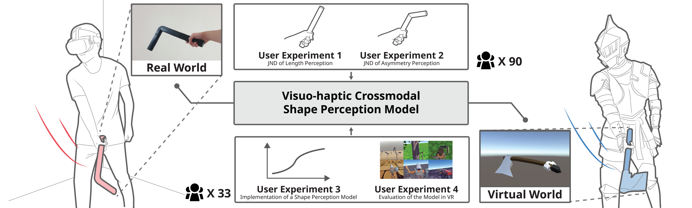
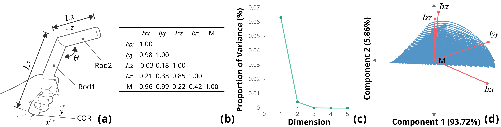
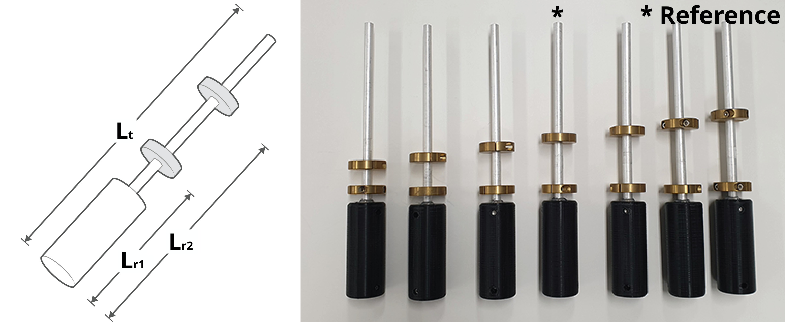
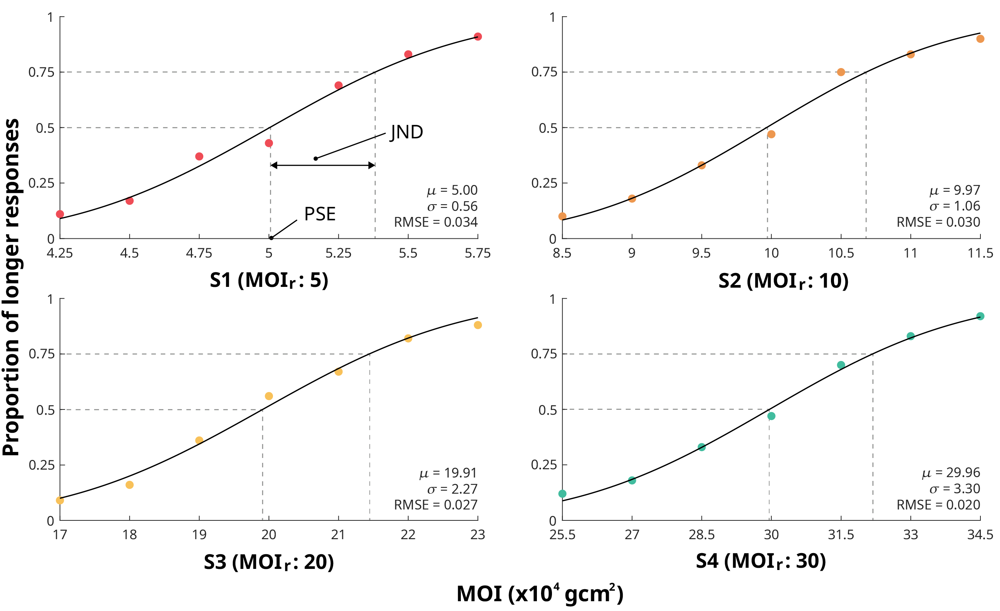
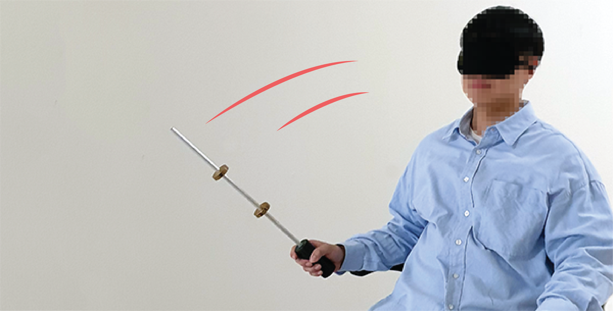
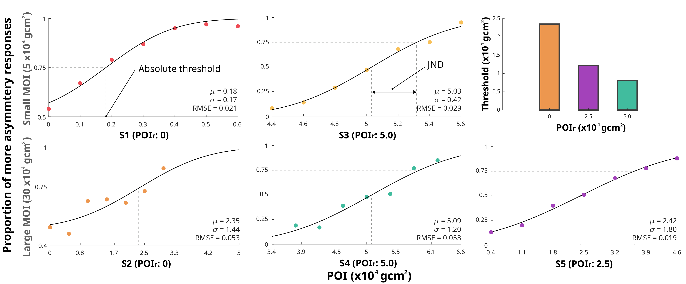
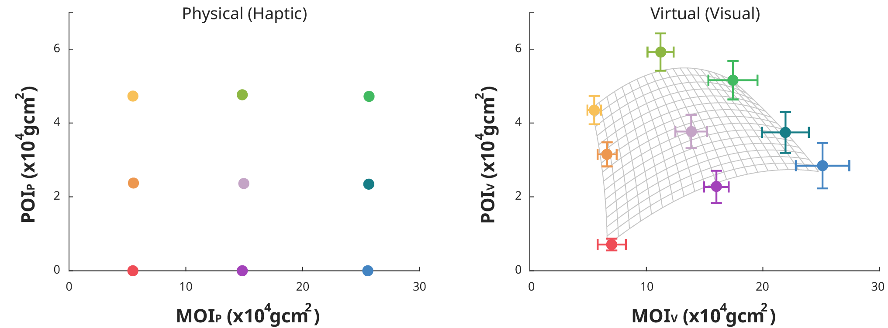
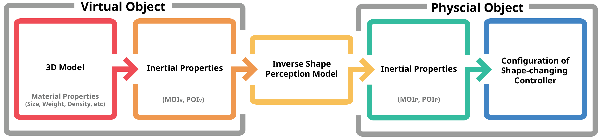
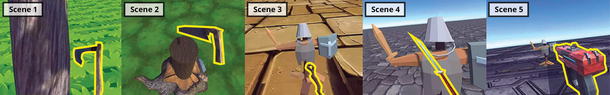
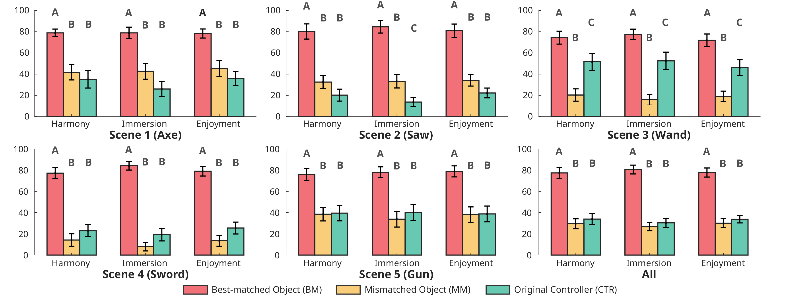

VISUO-HAPTIC SHAPE PERCEPTION MODEL
for handheld shape-changing controllers
Visuo-haptic Crossmodal Shape Perception Model for Shape-Changing Handheld Controllers Bridged by Inertial Tensor
ACM conference on Human Factors in Computing Systems (CHI'23)
ABSTRACT
We present a visuo-haptic crossmodal model of shape perception designed for shape-changing handheld controllers. The model uses the inertia tensor of an object to bridge the two senses. The model was constructed from the results of three perceptual experiments. In the frst two experiments, we validate that the primary moment and product of inertia (MOI and POI) in the inertia tensor have critical efects on the haptic perception of object length and asymmetry. Then, we estimate a haptic-to-visual shape matching model using MOI and POI as two link variables from the results of the third experiment for crossmodal magnitude production. Finally, we validate in a summative user study that the inverse of the shape matching model is efective for pairing a perceptually-congruent haptic object from a virtual object—the functionality we need for shape-changing handheld interfaces to aford perceptually-fulflling sensory experiences in virtual reality.
FULL CITATION
Chaeyong Park, Jeongwoo Kim, and Seungmoon Choi. 2023. Visuo-haptic Crossmodal Shape Perception Model for Shape-Changing Handheld Controllers Bridged by Inertial Tensor. In Proceedings of the 2023 CHI Conference on Human Factors in Computing Systems (CHI '23). Association for Computing Machinery, New York, NY, USA, Article 699, 1–18. https://doi.org/10.1145/3544548.3580724
FIGURES

(Teaser) We build a visuo-haptic crossmodal shape perception model. This model allows a user who is wielding a handheld object to experience congruent visual and haptic objects in virtual reality. One computer simulation and four user experiments were conducted to understand the human performance of shape perception and to build and evaluate the model.

(a) An object used in the simulation. (b) Correlation coefcients between physical variables related to moments of mass distribution. (c) A scree plot of PCA results. (d) Correlation of the variables to the two principal components 1 and 2.

Physical objects used in Exp. 1: (Left) Design. (Right) Physical stimuli objects prepared for Session 1.

Psychometric functions estimated in Exp. 1 for length perception.

A participant wielding a physical rod with the dom-inant hand without visual cues.

Psychometric functions estimated in Exp. 2 for asymmetry perception.

MOIs and POIs of physical and virtual objects estimated in Exp. 3. Corresponding points are color-coded. Error bars represent standard errors. The mesh surface (right) shows the regressed shape perception model.

Procedure for visual-to-haptic matching using the inverse model.

VEs of the fve scenarios used in Phase 2. The videos of the VEs are available in the supplemental materials.

Visuo-haptic crossmodal experience scores collected in Exp. 4. Error bars represent standard errors. The conditions grouped with the same letters did not have signifcant diferences.